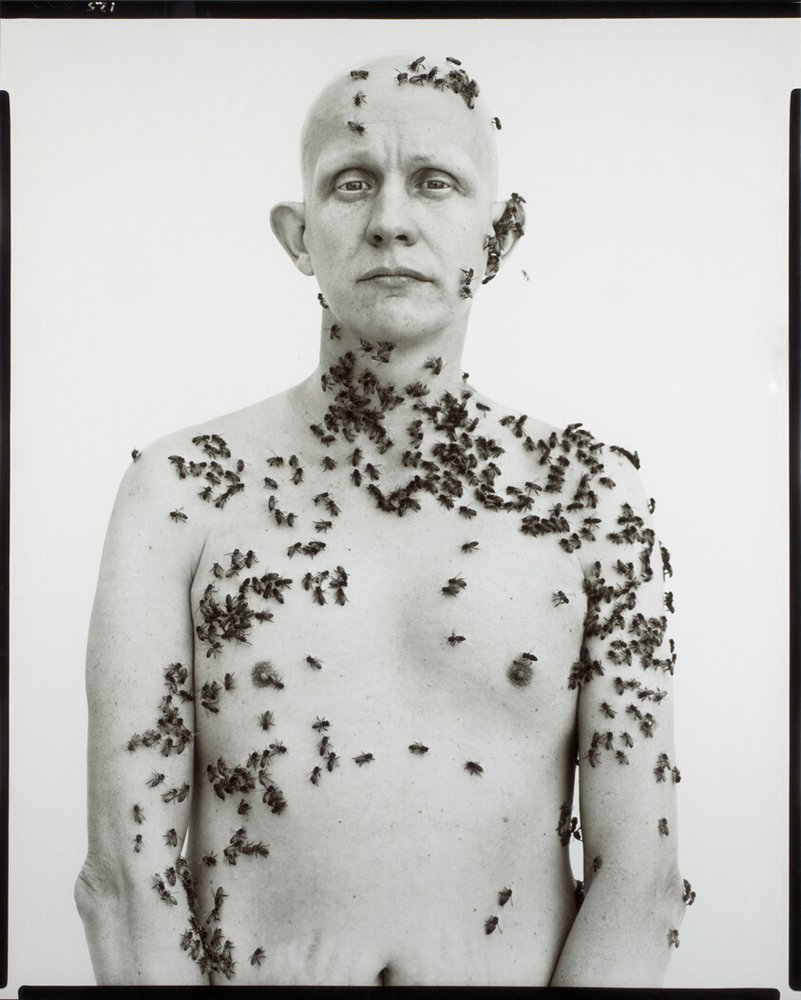

Ronald Fisher, Beekeeper, Davis, California
Richard Avedon · 9 May 1981, printed 1985 · Gelatin silver print · 136 × 114.5 cm · Art Institute of Chicago
In copyright. Look and learn: shown for study, not for download.
The Amon Carter Museum in Fort Worth commissioned Richard Avedon in 1979 to photograph the American West. Over five years he and his crew photographed 762 people at rodeos, carnivals, coal mines, oil fields, slaughterhouses and prisons, and exposed about 17,000 sheets of 8×10 film. Each subject stood in front of a white cloth. This sitting was on 9 May 1981 in Davis, California, and the print, made for the exhibition in 1985, is 1.36 metres tall.